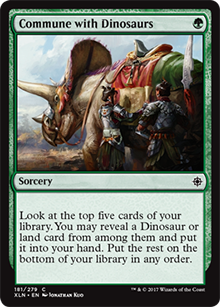
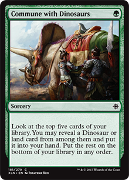
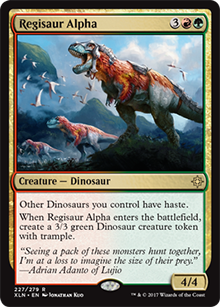
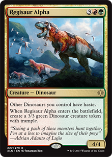
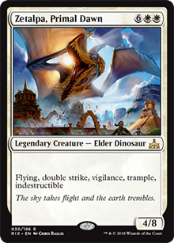
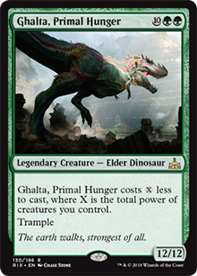
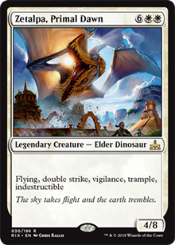
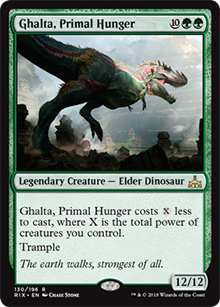

Finally the dinosaurs won a tribe with the launch of the Ixalan block. The main colors they meet are green, green and white (Naya), and choosing the best of these three colors can do a great deal of damage to those who dare to face them. The strategy of the deck is quite simple: make a mana ramp by putting lots of land into play, humans on the battlefield that reduce the cost of dinosaur spells, and make them fight against enemy creatures, removing them easily since many of dinosaurs have power and toughness above other creatures of the block. In addition, several dinosaurs have a powerful ability called "Enrage", every time they suffer damage (whether combat or not), something happens. Let's move on to strategies:


 

These cards are the base of the mana ramp. On turn 1 you can play Kinjalli's Caller if you have a plains on the field, or a Commune with Dinosaurs if you need some specific colored land on the first top 5 cards of the library, or simply pick up a dinosaur for your hand. If you already have a good hand and the right lands, keep Commune with Dinosaurs for later, it can be useful.
In turn 2, you can play Otepec Huntmaster to further lower the cost of your dinosaurs, or a Ranging Raptors. Every time it takes damage, you search for a basic land card and place the battlefield tapped. This card is the PILLAR of the deck, because you search for lands of the color you want/need, and they can still be alive after taking damage to look for even more lands. A great move would be to play a Savage Stomp on him at first, or a Tilonalli's Crown. Or better yet, play both and you have 2 guaranteed lands and a creature with 5 attack with trample.
 

In turn 3 you must already be with Ranging Raptros, and if you have already put on field one of the humans that decreases the mana cost, at this point you can already put a Ripjaw Raptor on battlefield with haste if you have a Opetec Huntmaster. Also, if you're lucky and already have a Kinjalli's Caller and an Otepec on the field, your dinosaurs will be costing 2 less, which means you can play an Regissaur Alpha (with haste due to Otepec)!.
 



From turn 5 onwards, if you were able to do any of these previous steps and your dinosaurs are costing less to play, you've already searched for lands with Ranging Raptors and already have dinosaurs in the field like the Ripjaw Raptor and/or Regisaur Alpha, now it's time to play with your big guys:
Trapjaw Tyrant is a very strong card, every time he takes damage you can exile a creature from an opponent, and if the opponent does not want to block it, it will take 5 damage. In addition, we have sources that cause the owner to harm him, such as Savege Stomp and the Tilonalli's Crown.
Etali, Primal Storm is a gamble card. When you attack with it, you can play something for free or not, if you have bad luck and exile a land. But only the fact of exiling a card from the top of opponent library and you can use it without cost of mana, is something powerful. Plus, he's a 6/6.
Zetalpa does not need comments, it's just an indestructible 4/8 dinosaur with double strike, trample, vigilance and fly. Wow.
The most powerful/priority option is the Ghalta. If you already have an Alpha Regissaur on the battlefield, you can probably play Ghalta with haste on turn 5! A 12/12 with trample on turn five it's a nightmare for opponents if they are not countered and have removal spells. In addition, the planewsalker Samut, the Tested can give double strike to him. End of the game.

Gishath, Sun's Avatar is one of my favorite dinosaurs. Although it costs 8 mana (1 of each main color of the dinosaurs) it manages to enter earlier with the reduction of costs and lands available, and its ability is too convincing. He just have haste, trample, and still has vigilance. Each damage directly on the opponent you can reveals the top cards of the library and put all the dinosaurs in play you draw into the battlefield. I've already putted only a Ghalta and Zetalpa. Also, if you own the planeswalker Samut, the Tested, you can give him double strike. Pretty much the game ends after that.
Zacama is the dinosaur that costs more mana from the deck, it's an absurd amount. But with the cost reductions and with the Ranging Raptors helping to search for lands, it's not so difficult to be conjured, and when it enters it's a nightmare. All terrains are untapped and you can already pay the mana costs of his abilities, including using one of them more and once in the same turn. It's a great game finisher, literally.
In planeswalkers, we have Huatli, Warrior Poet that fits pretty well on dinosaurs deck. It makes you gain many life points, since dinosaurs have a lot of power/toughness. In addition, it creates 3/3 dinosaur tokens and the main ability to me: it deals damage divided in any way to any creature on the battlefield (including your creatures to enrage dinosaurs), and they can not block, an immense damage depending on the dinosaurs who are on the battlefield over their control.
Samut, the Tested comes from the previous block (Hour of Devastation by Amonkhet block) and is still valid in the format, and becomes quite useful on this deck. Double strike for your dinosaurs is a great choice, as well as the second ability that can inflict damage on your opponent's creatures or even your own to activate enrage. Her last ability is also very strong, you can take two creatures from your library and put them on the battlefield. If a Regisaur Alpha is already in the field it would be great to take a Ghalta and a Zacama, otherwise take an Regisaur Alpha and another dinosaur of your choice, and you will smash the opponent.
That's enough for today, i hope you liked this article and it's strategy. If you like big creatures, i'm sure that dinosaurs is your choice to Ixalan block. Any suggestions or critics, please click on "Contact" in the top menu and send us a message.
a.